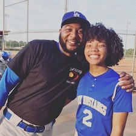
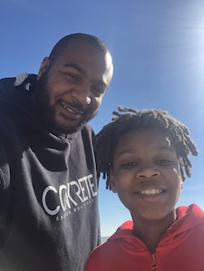
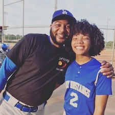
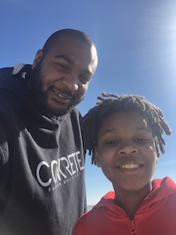

My name is Herbert Brown. You can call me Satch. I am an instructor for the MS Coding Academy. I have been a programming instructor for almost two years now. Coding, as it turns out is something that I really enjoy doing. Anyways, I'm 39, a husband, father, softball coach, DJ, and a bunch of other things that require titles. Here's some more detail about me.
Aug. 2017-Present
Aug. 2013-Aug. 2017
Sept. 2004-July 2013
Business Administration
I didn't graduate. They told me I had too many C's.
Business Administration
Bachelor's Spr '09
Finance
Bachelor's Spr '18
I go by the name DJ Daddy Bug. I love to spin vinyl. I'll play anything from hip hop, disco, funk, jazz, rock, or pop. If it grooves, I'll spin it.

Currently, I own about 1800+ albums. I buy from online stores like Vinyl Me Please and Discogs. But mostly, I buy from Offbeat.
I have created three albums. They are titled:
Who knows? If I feel like it, I will record another one.
I love to watch sports...and used to love playing them. I'm a longtime fan of the Los Angeles Lakers, Los Angeles Dodgers, and Dallas Cowboys. I'm also a hockey fan. I was previously a fan of the Philadelphia Flyers and Washington Capitals. I'm currently a fan of the Edmonton Oilers.
Baseball is my favorite sport. My favorite positon to play was catcher. Even though, I'm a Dodger fan, my two all-time favorite players were Giants, Barry Bonds and Willie Mays.
Not only do I love music, I'm also a fan of visual art, however, I cannot draw! I like to buy art, particularly from friends and local artists. I also love to read and write poetry. I have a poetry book, Beautiful Thoughts from the Ugly Poet.
Cooking is yet another passion of mine. Eating out is ok. But I'd rather be in the kitchen because it gives me another avenue to create.
 

Family is very important to me. I'm married to Cassandra. She is a Human Resources Specialist. She served in the army for 13 years. We have two children, Y'Sonni, who is 16, and Josiah, who is 12. I really enjoy spending tim with them.
Josiah loves to make stop-motion movies. This is the first one he made.
I do anything for my kids...especially make fun of them.